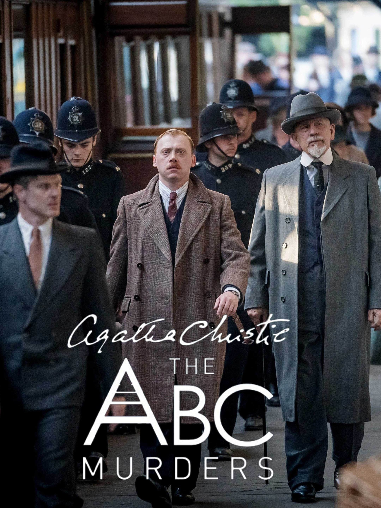
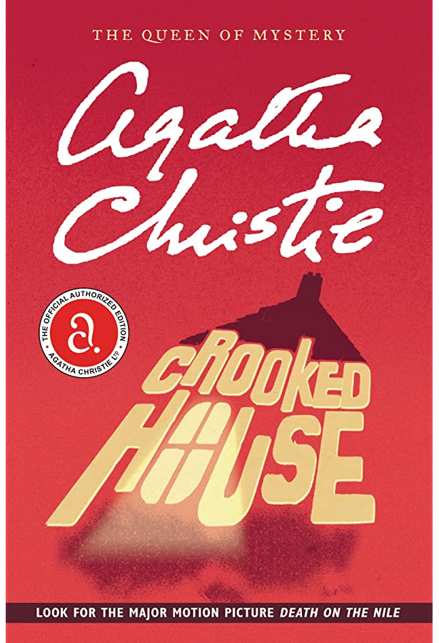
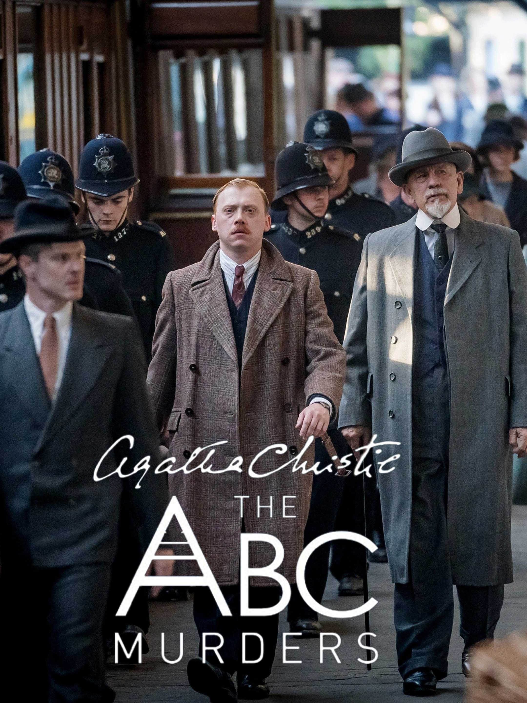
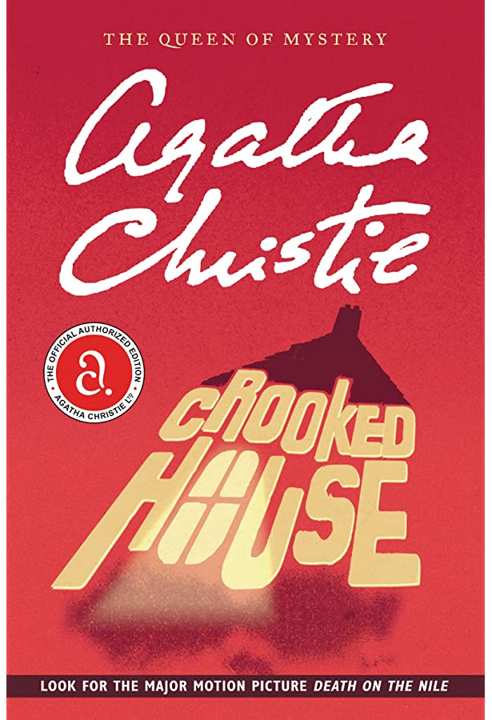
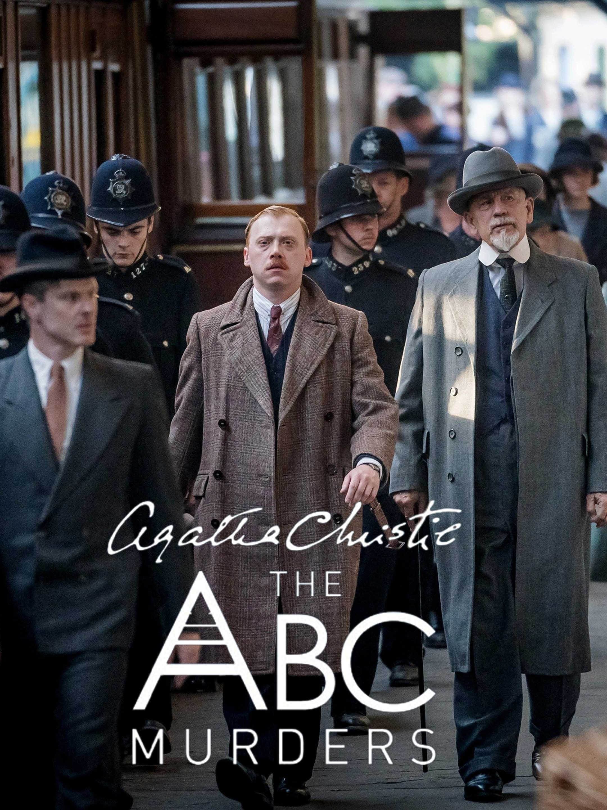
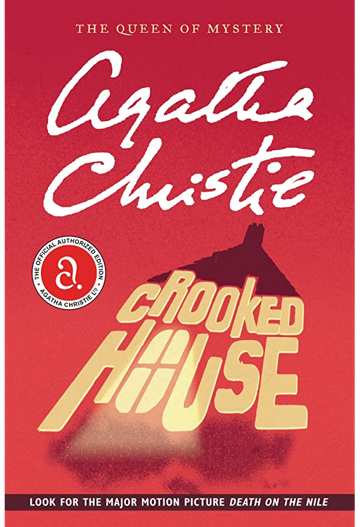

BEST SELLING NOVELS OF AGATHA CHRISTIE
and then there were none
'And Then There Were None' is a crime novel by British author Agatha Christie. The book is the best-selling crime thriller in the world and one of her best-selling books of all time, with over 100 million copies sold. The novel ranked #6 on the bestseller list. The plot is built around his ten lines from the nursery rhyme "Ten Little Niggers" (" Ten Little Indians" or "Ten Little Soldiers" in later editions).Each of the ten victims(Eight guests and his two stewards of the island) is killed in a manner that echoes his one of the rhyme lines. The island's youngest owner is also killed, but before the story begins on the mainland.
abc murders
ABC Murders is a crime novel written by British author Agatha Christie and starring Hercule Poirot, Arthur Hastings and chief Inspector Japp. The novel's format is unusual, combining first and third person narration. This approach was previously used by Agatha Christie in her 'The Man In The Brown Suit' In ABC Murders, the third-person story is said to have been reconstructed by Arthur Hastings, the story's first-person narrator.The first-premise is that a serial killer murders people with alliteration names.Although the murders appear to have no motive, Poirot suspects that one of the murders had a definite motive.
crooked house
The Crooked House was a fantastic crime novel by Agatha Christie.It was published by Dodd, Mead and Company in March 1949 and in the UK by Collin's crime Club on 23 May Criminologist Charles Hayward returns form Cario to solve a murder case.The dead man was the grandfather of his fiance named Artside Leonides, the wealthy patriarch of Leonides family who was poisoned. The entire family has solid motives for commiting this crime, and among the suspects his much younger wife is a prime suspect.An unexpected twist awaits at the end of the story.

